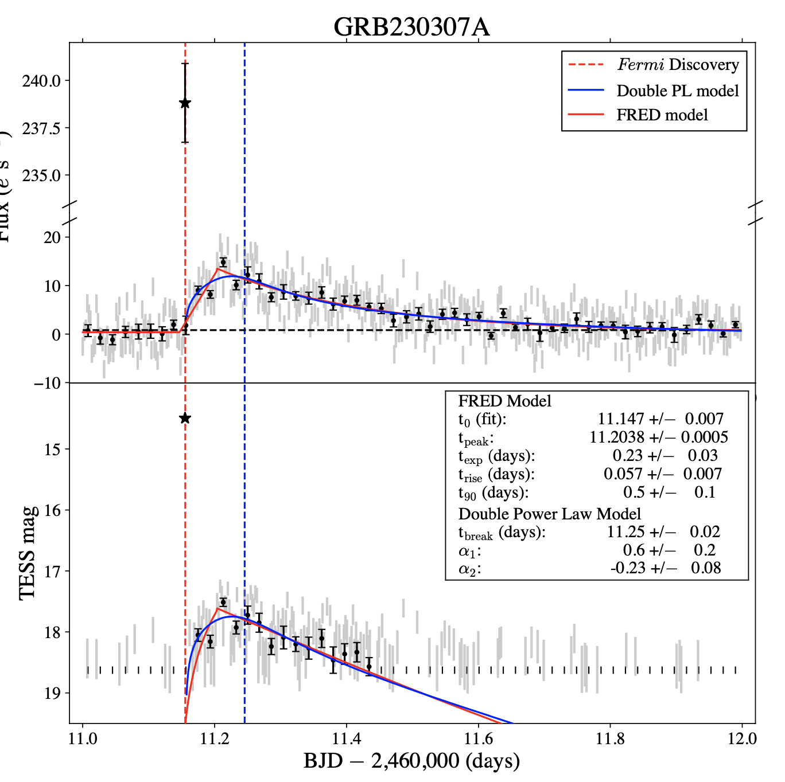
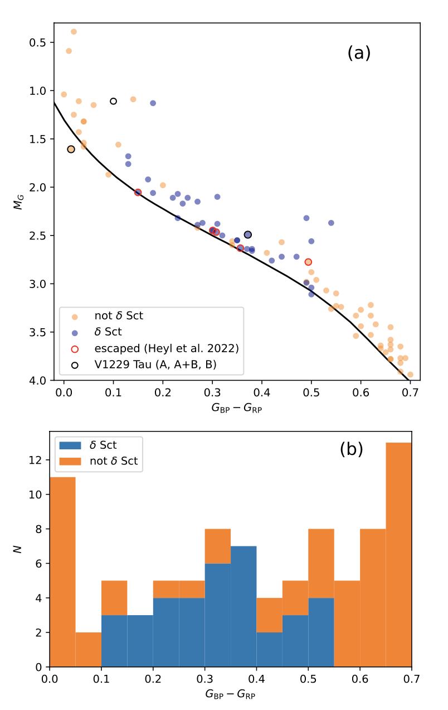
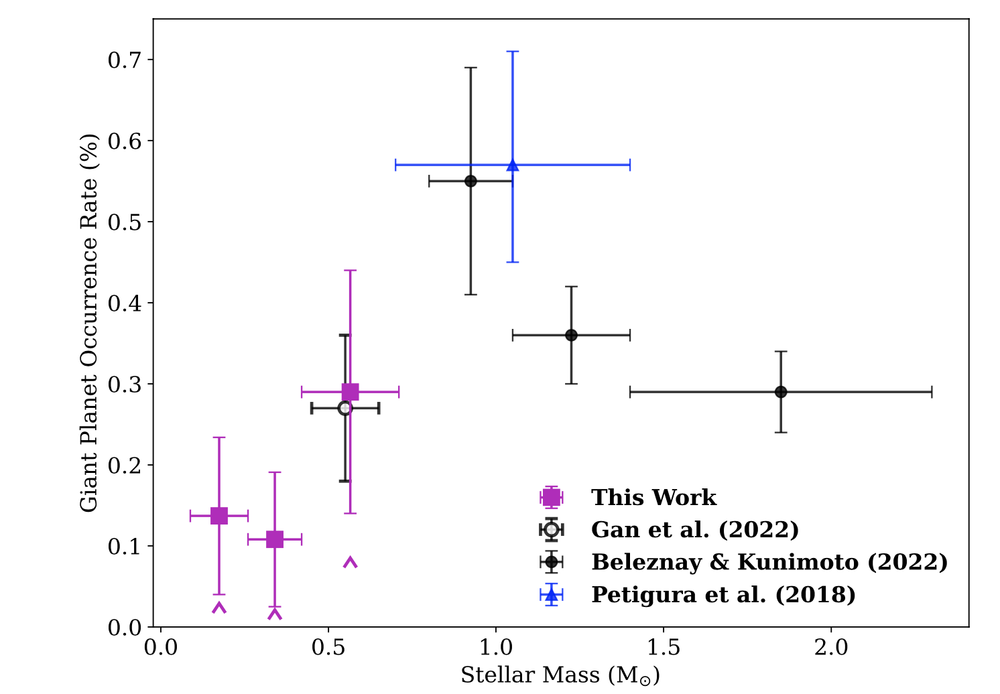

Welcome TESS followers to our latest news bulletin! This week, we are looking at three recent papers from the archive. Enjoy!
Observations of GRB 230307A by TESS (Fausnaugh et al. 2023) :
Gamma-ray bursts (GRB) are extremely energetic events that can be hundreds of times brighter than a typical supernova. They are usually associated with either the final evolutionary stages of massive stars (long-duration GRBs) or neutron star/black hole mergers (short-duration GRBs). GRB 230307A is a long GRB detected by Fermi on 2023 March 7, followed by an optical afterglow observed by ULTRACAM, GMOS-S, RASA36, and KMTnet. Fausnaugh et al. (2023) present the TESS observations and analysis of the afterglow based on the 200-sec cadence lightcurve from Sector 62. The GRB data was made publicly-available on MAST as a high-level science product produced by MIT on 2023 March 12, less than two days after it was downloaded from the spacecraft. The authors utilize their difference-imaging pipeline to process the photometry and identify a transient source close to the target identified by Fermi. Their lightcurve is available here. Fausnaugh et al. (2023) fit to the afterglow lightcurve a fast-rise exponential decay and a double power-law model. From this fit several parameters were derived: a peak afterglow magnitude of Tmag = 17.65, a rise time of 0.057 days, time of break of 0.09 days after the Fermi trigger, α1 = 0.6+/-0.2, and α2 = -0.21+/-0.07. They also estimate a peak burst magnitude brighter than Tmag = 13.4 for duration of less than 73.6 sec, and an isotropic luminosity at 7839 Angstrom greater than 9x1044 (D/1 Gpc)2 erg/sec. Thanks to TESS data, the authors were able to follow-up and study the behavior of the GRB just a few days after the event.
TESS observations of the Pleiades cluster: a nursery for delta Scuti stars (Bedding et al. 2023) :
Delta Scuti stars are young pulsating variables residing in the instability strip of the HR diagram. Not all stars in the strip show delta Scuti pulsations, and making a comprehensive description of the mechanisms responsible for these pulsations is challenging. Bedding et al. (2023) present a detailed analysis of 89 A- and F-type probable members of the Pleiades open cluster using TESS photometry, Gaia data, and spectroscopic measurements from the TRES instrument. TESS observed the Pleiades in Sectors 42-44, with 87 out of the 89 examined stars observed in 120-s cadence. The authors detected delta Scuti pulsations from 36 stars in the TESS photometry, 6 of which are previously known pulsators, and measured rotational velocities for 49 stars in their sample. Bedding et al. (2023) found that the delta Scuti pulsators reside within a strip constrained to Gaia colors 0.1 < GBP − GRPRP < 0.55. The fraction of pulsating stars from their sample in this color range is 72%, increasing to 84% in the middle of the instability strip (0.2 < GMBP − GRPRP < 0.4). The authors note that this is significantly higher than the corresponding fraction of delta Scuti stars detected in Kepler data (50-60%), and argue that the details of the pulsation spectra do not seem to correlate with effective temperature. This work demonstrated TESS' ability to make major contributions to the field of variable stars.
The occurrence rate of giant planets orbiting low-mass stars with TESS (Bryant et al. 2023) :
Estimates of the occurrence frequency of giant planets around low-mass stars provide important tests for the theories of planet formation and evolution. The core-accretion pathway, for example, predicts such planets to be rare, with occurrence rate estimates typically less than 1%. Bryant et al. (2023) present a systematic study of the occurrence rate of planets with radii between 0.6 RJup and 2 RJup around stars with masses between 0.088 MSun and 0.71 MSun, and distances of less than 100 pc. The authors use 30-min cadence TESS data from Sectors 1-26 to perform a transit search on 91,306 low-mass stars, detecting a total of 3930 periodic transit-like signals. Of these, they flag 1828 as false positives and mark the remaining 2102 as genuine planet candidates. From the latter, Bryant et al. (2023) identify 15 giant planet candidates, of which five are confirmed planets and one is a spectroscopically-determined eclipsing binary, leaving a total of nine bona-fide giant planet candidates around low-mass stars. To measure the detection efficiency of their pipeline, the authors perform injection-and-retrieval simulations of 873,760 for a period between 1 and 10 days, planet radii between 0.6 RJup and 2 RJup, and impact parameters between 0 and 1. Thanks to the TESS data, Bryant et al. (2023) were able to measure an occurrence frequency of giant planets around low-mass stars of 0.194+/-0.072%, extending the estimates to stars of lower mass compared to previous studies, and suggesting that these planets are even rarer around late M-dwarf compared to early M-dwarfs.

Fig. 1: Taken from Fausnaugh et al. (2023). TESS lightcurve of GRB 230307A highlighting the different components of the event and the respective best-fit models. The black star symbol represents the emission corresponding to the Fermi detection (dashed red vertical line). The gray symbol represents the 200-sec cadence observations and the black symbols represent them binned to 1,600-sec cadence. The horizontal dashed line shows the residual background for the fast-rise exponential decay model (FRED), and the dashed blue vertical line represents the break time for the double power-law model (PL).

Fig. 2: Taken from Bedding et al. (2023). Gaia color-magnitude diagram of the 89 studied A and F stars (upper panel) and corresponding distribution of the number of pulsators as a function of the Gaia Gap - Gap color.

Fig. 3: Taken from Bryant et al. (2023). Occurrence frequency of short-period giant planets as a function of stellar mass, comparing the results from this work to previous studies.